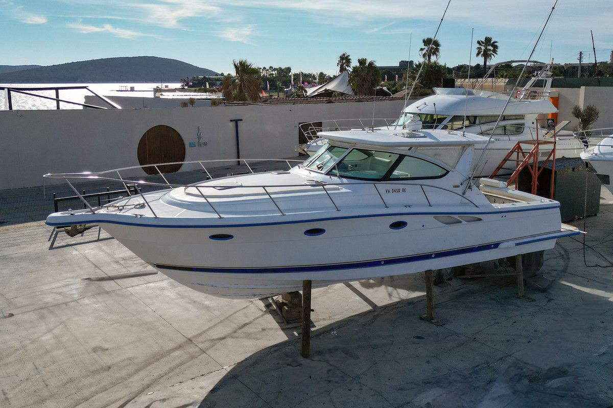
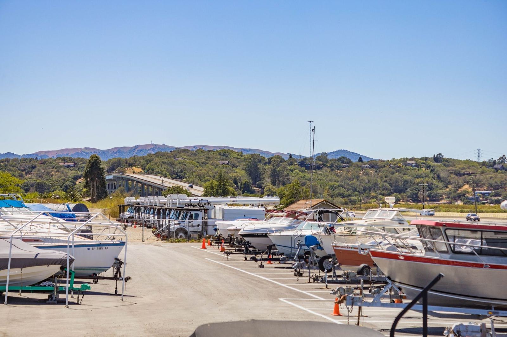

Tuz, güneş ve nem tekneye en çok kışın zarar verir. Biz o ayları kapalı bir garajda, kontrollü ortamda, bakım takvimi işleyerek geçirtiyoruz. İlkbaharda tekneniz ilk günkü gibi denize iner.
Aşağı kaydırın; kirin nasıl gittiğini görün. Karina, güverte ve gövde: tuz ve yosun izi kalmaz.
İklim kontrollü, kameralı kapalı garajda güvenli kış konaklaması. Kendi yeri, kendi bakım kartı.
Motor kışlama, elektrik, fiber ve jelkot onarımı; yetkili servis standartlarında.
Basınçlı yıkama, jelkot polisaj, teak bakımı, iç mekân detay temizliği.
Karina raspası, zehirli boya, anot değişimi. Sezona hazır alt yapı.
Marinadan garaja, garajdan denize. Kaldırma, taşıma, suya indirme.
01 · Teslim alıyoruz
02 · Travel lift ile kaldırıyoruz
03 · Motor kışlama & onarım
04 · Kapalı, kameralı, nem kontrollü
05 · İlkbaharda polisajlı teslim


Tekne boyunuzu ve marinanızı yazın; aynı gün fiyat ve teslim tarihiyle dönelim. Kış sezonu kapasitesi sınırlı.
WhatsApp'tan yaz →